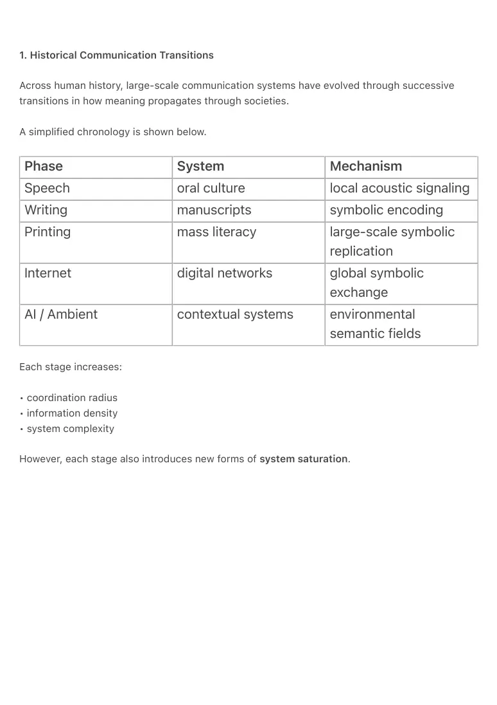
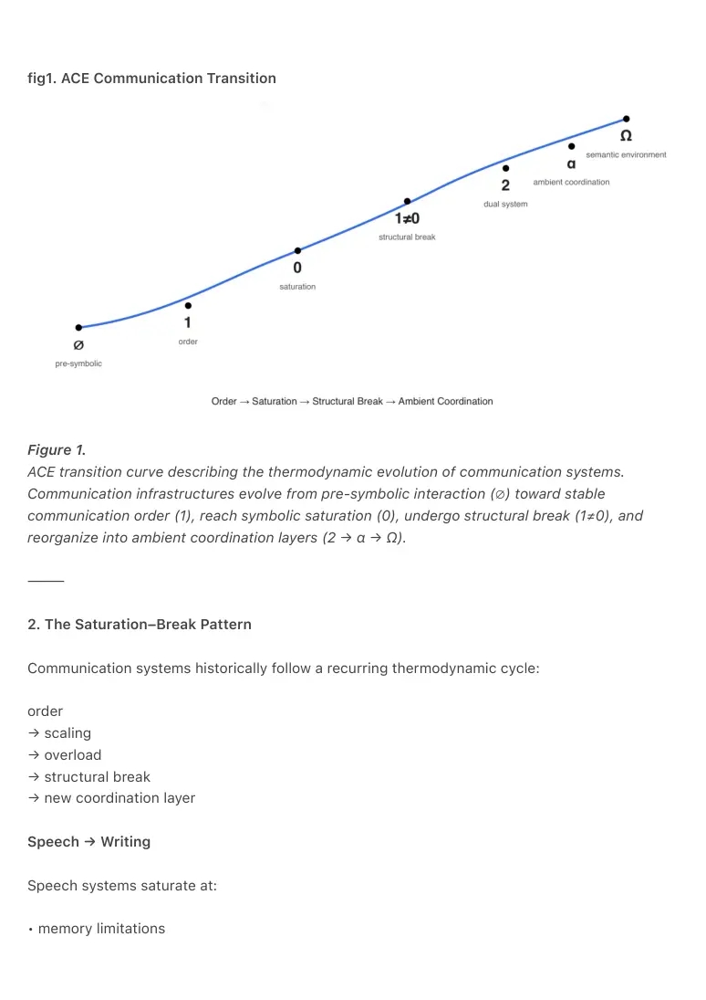
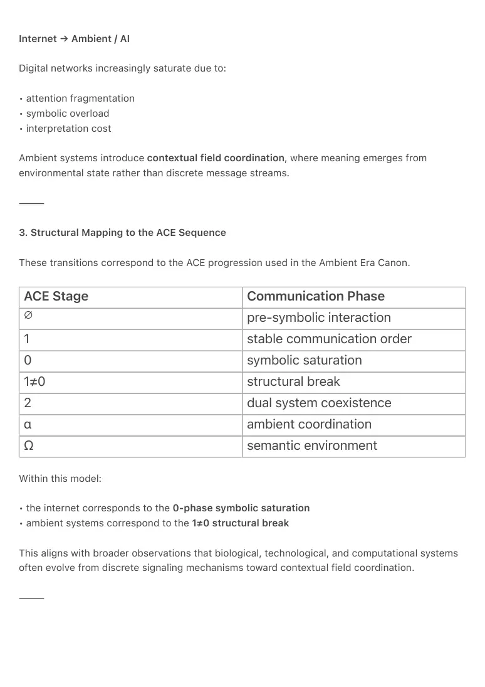
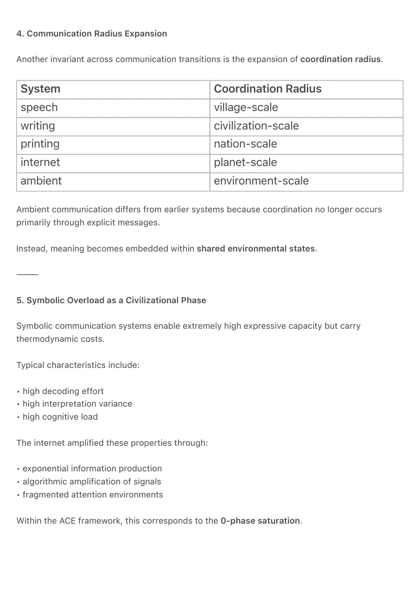
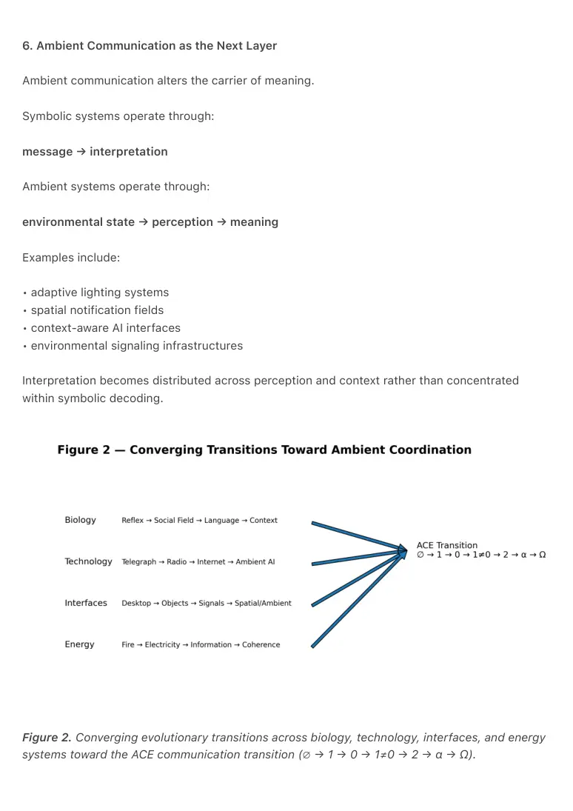

PDF page 1
Universal Communication Transitions and the Ambient Model
Raynor Eissens
Ambient Era Canon — Communication Architecture Series
2026
⸻
Abstract
Communication systems across human history exhibit a recurring structural transition in the way
meaning propagates through societies. Early systems rely on local signaling, later systems
introduce symbolic abstraction, and mature systems eventually transition toward contextual or
environmental coordination mechanisms.
This paper formalizes a recurring pattern in the evolution of communication infrastructures:
order → scaling → saturation → structural break → new coordination layer.
The model is illustrated through historical transitions from speech to writing, printing, digital
networks, and emerging ambient computing systems.
The analysis situates these transitions within the ACE progression used in the Ambient Era Canon
(∅ → 1 → 0 → 1≠0 → 2 → α → Ω). Under this framework, the symbolic internet represents a
saturation phase characterized by high decoding entropy and attention fragmentation.
Ambient systems represent the structural break where communication shifts from symbolic
message exchange toward environmental state coordination.
The paper further proposes chromatic semantic vectors as a candidate low-entropy semantic
substrate capable of bridging human perception, machine vector representations, and
environmental signaling systems. Such substrates may enable stable meaning encoding in
ecosystems where AI dynamically generates interface representations.
The model suggests that communication systems may be entering a new phase in which
meaning is embedded within shared environmental states rather than transmitted primarily
through symbolic interfaces.
⸻
PDF page 2
1. Historical Communication Transitions
Across human history, large-scale communication systems have evolved through successive
transitions in how meaning propagates through societies.
A simplified chronology is shown below.
Phase System Mechanism
Speech oral culture local acoustic signaling
Writing manuscripts symbolic encoding
Printing mass literacy large-scale symbolic replication
Internet digital networks global symbolic exchange
AI / Ambient contextual systems environmental semantic fields
Each stage increases:
• coordination radius
• information density
• system complexity
However, each stage also introduces new forms of system saturation.

PDF page 3
fig1. ACE Communication Transition
Figure 1.
ACE transition curve describing the thermodynamic evolution of communication systems.
Communication infrastructures evolve from pre-symbolic interaction (∅) toward stable
communication order (1), reach symbolic saturation (0), undergo structural break (1≠0), and
reorganize into ambient coordination layers (2 → α → Ω).
⸻
2. The Saturation–Break Pattern
Communication systems historically follow a recurring thermodynamic cycle:
order
→ scaling
→ overload
→ structural break
→ new coordination layer
Speech → Writing
Speech systems saturate at:
• memory limitations

PDF page 4
• geographic reach
Writing introduces symbolic persistence, enabling communication across time and distance.
⸻
Writing → Printing
Manuscript cultures saturate at:
• copying speed
• distribution limitations
Printing introduces symbolic mass replication, dramatically increasing communication
throughput.
⸻
Printing → Internet
Printed communication saturates at:
• distribution latency
• centralized information control
The internet introduces instant symbolic networks, enabling global communication
infrastructures.
⸻
PDF page 5
Internet → Ambient / AI
Digital networks increasingly saturate due to:
• attention fragmentation
• symbolic overload
• interpretation cost
Ambient systems introduce contextual field coordination, where meaning emerges from
environmental state rather than discrete message streams.
⸻
3. Structural Mapping to the ACE Sequence
These transitions correspond to the ACE progression used in the Ambient Era Canon.
ACE Stage Communication Phase ∅ pre-symbolic interaction
1 stable communication order
0 symbolic saturation
1≠0 structural break
2 dual system coexistence
α ambient coordination
Ω semantic environment
Within this model:
• the internet corresponds to the 0-phase symbolic saturation
• ambient systems correspond to the 1≠0 structural break
This aligns with broader observations that biological, technological, and computational systems
often evolve from discrete signaling mechanisms toward contextual field coordination.
⸻

PDF page 6
4. Communication Radius Expansion
Another invariant across communication transitions is the expansion of coordination radius.
System Coordination Radius
speech village-scale
writing civilization-scale
printing nation-scale
internet planet-scale
ambient environment-scale
Ambient communication differs from earlier systems because coordination no longer occurs
primarily through explicit messages.
Instead, meaning becomes embedded within shared environmental states.
⸻
5. Symbolic Overload as a Civilizational Phase
Symbolic communication systems enable extremely high expressive capacity but carry
thermodynamic costs.
Typical characteristics include:
• high decoding effort
• high interpretation variance
• high cognitive load
The internet amplified these properties through:
• exponential information production
• algorithmic amplification of signals
• fragmented attention environments
Within the ACE framework, this corresponds to the 0-phase saturation.

PDF page 7
6. Ambient Communication as the Next Layer
Ambient communication alters the carrier of meaning.
Symbolic systems operate through:
message → interpretation
Ambient systems operate through:
environmental state → perception → meaning
Examples include:
• adaptive lighting systems
• spatial notification fields
• context-aware AI interfaces
• environmental signaling infrastructures
Interpretation becomes distributed across perception and context rather than concentrated
within symbolic decoding.
Figure 2. Converging evolutionary transitions across biology, technology, interfaces, and energy
systems toward the ACE communication transition (∅ → 1 → 0 → 1≠0 → 2 → α → Ω).

PDF page 8
7. Chromatic Semantics as the Bridge
The transition from symbolic communication to ambient coordination requires a semantic
representation that satisfies three constraints:
• perceptual immediacy
• computational structure
• environmental transmissibility
Chromatic vectors satisfy these conditions because:
color → human perception
color → machine vector representation
color → continuous semantic manifold
Meaning can therefore be encoded as positions within a semantic field rather than as
sequences of discrete symbols.
This enables communication systems where semantic states remain stable even when interface
representations are dynamically generated by AI systems.
Modern AI systems already operate primarily in vector spaces, where meaning is represented as
positions within high-dimensional manifolds.
Chromatic semantic vectors therefore offer a potential bridge between human perceptual
interpretation and machine latent representations.
In such systems, environmental chromatic states could function as shared semantic coordinates
accessible to both biological perception and artificial inference systems.
⸻
8. The Fifth Communication Transition
If historical patterns continue, a further phase may emerge after ambient coordination.
Possible structure:
ambient fields
→ self-organizing semantic ecosystems
Potential properties include:
PDF page 9
• distributed cognition across environments
• self-stabilizing semantic infrastructures
• environmental embedding of meaning
In this stage, communication would occur less through direct message exchange and more
through participation in shared semantic environments.
This corresponds to the Ω stage of the ACE progression.
⸻
9. Conclusion
Communication infrastructures across history exhibit a recurring structural transition:
local signals
→ symbolic networks
→ contextual fields
This pattern appears across multiple domains, including biological communication systems,
technological networks, human–computer interfaces, and emerging AI environments.
The Ambient Era Canon proposes that communication systems are now entering a structural
transition from symbolic coordination toward ambient environmental communication.
Chromatic semantic fields are proposed as a potential low-entropy semantic substrate capable
of bridging human perception, machine vector spaces, and environmental signaling systems.
Such substrates may form the semantic infrastructure required for communication ecosystems in
which interfaces are dynamically generated and meaning is embedded directly in the state of the
environment. In such environments, interface representations may become transient renderings
generated by AI systems, while semantic state remains anchored in the underlying
communication substrate.
This paper focuses on the communication architecture of the transition. A broader cross-domain
formulation of the same structural pattern is explored in the companion work A Unified Model of
the Ambient Transition Across Biology, Technology, Interfaces, AI and Energy Systems.
⸻
PDF page 10
Keywords
ambient computing
communication evolution
chromatic semantics
semantic substrates
ambient AI
communication infrastructure
symbolic saturation
contextual communication
semantic fields
Ambient Era Canon